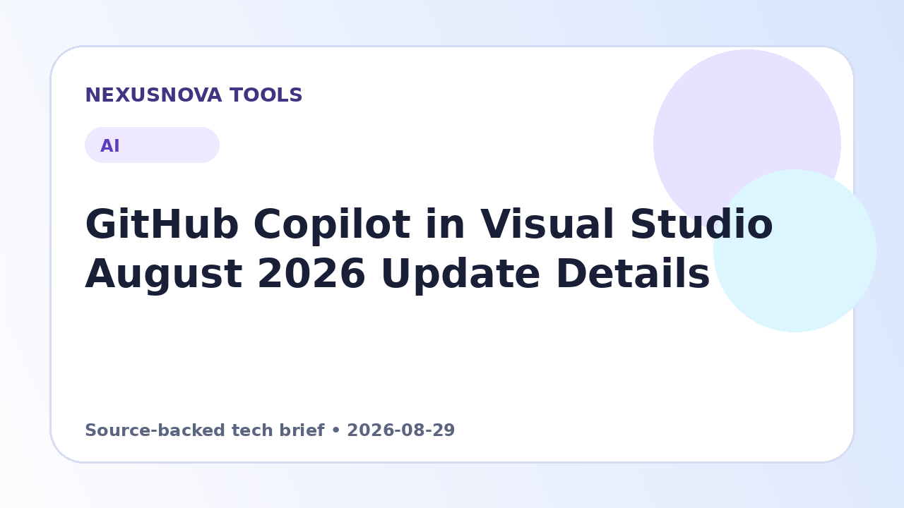

GitHub Copilot in Visual Studio August 2026 Update Details
The August 2026 update for GitHub Copilot in Visual Studio introduces enhanced model management, reasoning controls, organization-wide custom agents, and automated Git reviews.
Published 2026-08-29 • NexusNova Editorial Team

Expanded Agent and Model Management Controls
The August 2026 update to GitHub Copilot in Visual Studio gives developers and administrators greater control over their AI workflows. Organization and enterprise administrators can now deploy custom agents across all repositories within their organization. Visual Studio automatically identifies these centralized custom agents, displaying their source and detailed descriptions directly inside the agent selection interface.
Model selection and organization have also been improved. Developers can now pin their preferred AI models to the top of the menu and collapse less frequently used models. A dedicated management view provides transparency into context window limits, specific model capabilities, token costs, and custom model controls. Additionally, developers can monitor subscription plan details and limit warnings directly from the Copilot prompt context window.
Adjustable Reasoning Effort and Integrated Git Reviews
To balance processing depth against token consumption, supported models now feature explicit thinking effort settings: Low, Medium, and High. Developers can opt for lower reasoning settings when completing routine tasks or select higher effort modes for architecture design, complex algorithms, and deep debugging.
Code quality management receives a boost via the expanded Git agent. Developers can prompt the Git agent to review uncommitted code or specific commits before creating a pull request. Review suggestions appear directly within the editor alongside a navigable summary in the Git Changes panel. Developers can also interact with Copilot Chat to clarify or fix flagged issues. This review feature integrates with both GitHub and Azure DevOps repositories across all Copilot plan tiers.
Next steps — GitHub Copilot in Visual Studio Au
- Check the Visual Studio Insiders channel to access the latest August 2026 features.
- Open the model management view in Visual Studio to review context window sizes, cost details, and pin your primary models.
- Adjust the model thinking effort settings between Low, Medium, and High based on the complexity of your current coding task.
- Run the Git agent against uncommitted local changes to review inline suggestions prior to opening a pull request.